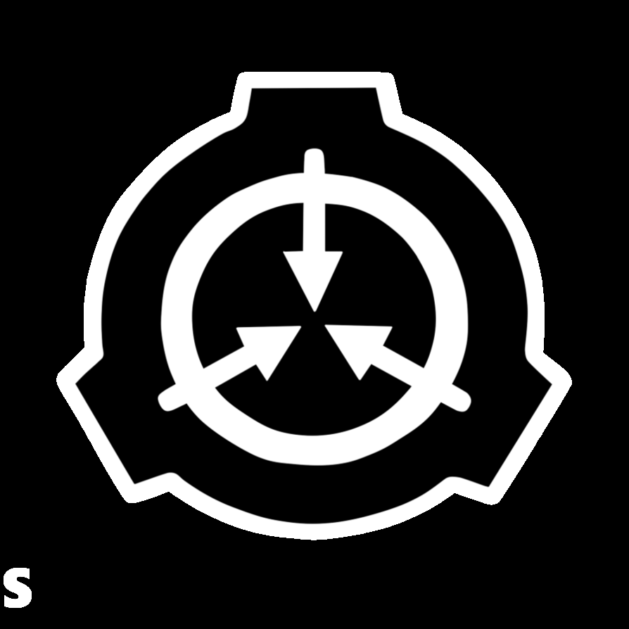

História da Fundação
Somos a Fundação SCP, uma organização secreta confiada pelos governos de todo o mundo para conter e estudar indivíduos, entidades, locais, objetos e fenômenos anormais que desafiam as leis da natureza (que são sempre referidos como SCPs). Os objetos SCPs, se deixados fora de contenção, podem representar uma ameaça para os seres humanos ou, pelo menos, para o senso de realidade e normalidade da humanidade. A existência dos SCPs é mantida sob sigilo pela Fundação SCP para evitar pânico em massa e caos permitindo que a civilização humana funcione normalmente. Quando um SCP é descoberto, a Fundação SCP envia agentes para coletar e transportar o SCP para uma instalação da Fundação ou para contê-lo em sua localização de descoberta caso o transporte não seja possível. Uma vez que os SCPs são contidos, eles são estudados por cientistas da Fundação. Indivíduos adquiridos pela Fundação em prisões de segurança máxima e afins (denominados Classe-D) são utilizados para interagir com SCPs perigosos devido ao risco representado por esses SCPs e à capacidade de uso da Classe-D. A Fundação SCP possui documentação para todos os SCPs sob sua custódia, que pode incluir ou vincular a relatórios e arquivos relacionados. Esses documentos descrevem os SCPs e incluem instruções para mantê-los em segurança.
Classes de Objetos
Todos os objetos, entidades e fenômenos anômalos que requerem Procedimentos de Contenção Especial recebem uma Classe de Objeto para fins de prioridade de pesquisa, orçamentação e outras considerações. A classe atribuída a um objeto é geralmente determinada por uma série de fatores, mas principalmente por uma combinação de sua dificuldade de conter, bem como o perigo colocado para o pessoal da Fundação e da humanidade em geral. A classificação de uma anomalia particular está sujeita a atualização e modificação à medida que a pesquisa e nossa compreensão do objeto, entidade ou fenômeno melhora.
Neutralizado
A designação "Neutralizado" é atribuída a qualquer objeto que tenha, de alguma forma, suas propriedades habituais removidas, normalmente por destruição, morte ou remoção de nosso contínuo de referência. Embora muitas vezes desativado, isso nem sempre é o caso e eles ainda podem ser listados no registro mestre. Os objetos classificados nesta classe devem ter uma nota indicando que classe era enquanto era um SCP ativo, bem como uma explicação para a razão e método de neutralização. A investigação sobre a neutralização dos SCP de Keter-classe é sempre uma prioridade máxima para a Fundação.
Explicado
Um SCP-EX, que significa Explicado, é um SCP que nós compreendemos. È um SCP que não é mais um SCP, por ter se tornado algo comum, porque nós entendemos as regras de funcionamento ou poque não é mais um problema. A diferença entre um SCP padrão e um SCP-EX são principalmente três. Primeiro, a designação -EX. Qualquer SCP feito como -EX precisa ter um título como SCP-###-EX. Segundo, o protocolo de contenção. Enquanto eu ainda gostaria de ver os procedimentos de contenção antigos. ,talvez rasurados, um -EX não precisa mais ser contido, seja qual for a razão. E, terceiro, no final do artigo, precisa ter uma seção detalhando COMO deixou de ser anormal e virou -EX.
Safe
A designação Safe é dada a objetos que podem ser contidos de maneira efetiva e confiável. Objetos Safe podem possuir procedimentos de contenção, mas não é esperado que estes procedimentos falhem com frequência ou que sejam alterados no futuro. Alguns objetos designados como Safe são humanos, humanoides e/ou sencientes. Para evitar ferimentos e/ou morte de funcionários e de SCPs, a interação com estes objetos deve ser cordial e profissional, levando em conta os procedimentos especiais de contenção. É importante ressaltar que a designação Safe não significa que os procedimentos de contenção são desnecessários. Diversos objetos Seguros podem ser bastante perigosos em certas situações. A distinção importante que define um objeto Seguro é o fato deste poder ser manuseado com segurança, desde que os procedimentos sejam seguidos. Um exemplo de um objeto Safe seria uma arma, uma bomba nuclear ou uma amostra de polônio.
Euclid
Um objeto SCP é classificado como Euclid quando seu comportamento não pode ser previsto precisamente, seja por que o item é senciente, por que seu funcionamento vai além do conhecimento científico atual ou por que sua natureza não é compreendida no momento. Objetos da classe Euclid não representam a mesma ameaça existencial à humanidade que os objetos de classe Keter, embora ainda geralmente necessitem mais esforços para conter que objetos Safe. Apesar de que muitos objetos da classe Euclid poderiam ser utilizados para trazer benefícios para a Fundação e para a humanidade, podem haver ramificações desconhecidas de seu uso, devido à sua natureza imprevisível. Alguns SCPs da classe Euclid eventualmente são compreendidos o suficiente e reclassificados como Safe, mas a maioria permanece incompreensível mesmo após experimentos exaustivos.
Keter
A designação Keter é reservada para objetos que, simultaneamente, (a) representem hostilidade ativa e energética à vida humana, à civilização ou ao espaço-tempo e são capazes de causar destruição significativa em caso de falha na contenção. Estes objetos devem ser catalogados, contidos de acordo com os procedimentos especiais de contenção e, se possível, destruídos. Ser hostil à vida humana, por si só, não é causa para classificação como Keter. A classificação indica que o objeto não só é capaz de provocar prejuízos consideráveis à vida e à civilização, mas que seus protocolos de contenção devem ser extensiva, cuidadosa e precisamente seguidos para prevenir tais danos. Pesquisas para neutralizar objetos Keter são sempre uma prioridade da Fundação. Casos onde objetos Keter neutralizáveis são mantidos sob custódia da Fundação são raros e agrupados em três categorias principais. Além dos casos em que a destruição do objeto é impossível por invulnerabilidade ou circunstância semelhante, alguns dos objetos de classe Keter possuem valor tático considerável para a Fundação. Outros ainda representam um risco maior em sua destruição do que na manutenção de sua existência. A fundação já se aproveitou de alguns SCPs de classe Keter, mas essas situações são raras e excepcionais: por exemplo, SCP-076-2 só aceitou trabalhar com a Fundação devido ao seu relacionamento incomum com o Agente [REMOVIDO] e sua capacidade de se comunicar com humanos, e mesmo assim, esta aliança não foi duradoura. A maioria dos SCPs de classe Keter não são sencientes e a maioria deles são objetos inanimados. Estes dados podem mudar conforme novas informações são descobertas. "Keter" significa "A Coroa do Rei" em hebraico e é o nível mais elevado dos Sephirot na Kabbalah judaica.
Thaumiel
Objetos de classe Thaumiel são altamente classificados e extremamente raras anomalias que são utilizados pela Fundação para conter ou neutralizar os efeitos de outras anomalias altamente perigosas, especialmente Keter-classe objetos. Mesmo a mera existência de objetos de classe Thaumiel é classificada nos níveis mais altos da Fundação e seus locais, funções e status atual são conhecidos por poucos funcionários da Fundação fora do Conselho O5.
Appolyum
São SCPs apocalípticas, que embora não necessariamente causem um estrago maior do que SCPs Keter, são muito mais perigosas no momento, sendo ameaças constantes e imediatas ao mundo. Embora uma SCP Keter possa muito bem, por exemplo, causar grande destruição caso seja livre ou caso os processos de sua contenção sejam violados, uma Apollyon é impossível de ser contida e naquele exato momento está causando destruição e condições apocalípticas a todos, e a sua natureza muitas vezes a torna capaz de realizar uma cadeia de eventos que causam a destruição de todo o mundo. Exemplo: SCP-001 (S. D. Locke).
Archived
ARC refere-se a páginas que foram arquivadas em vez de excluídas completamente. As páginas arquivadas são anexadas com -ARC. Há algumas razões para uma página ser arquivada em vez de excluída. Na maioria das vezes, é porque um SCP é velho e referenciado em Tales, e sua exclusão por atacado seria confundir obras que fazem referência a ele. Há também coisas que o pessoal simplesmente deseja manter em torno, embora fora da lista principal. O processo de arquivamento de uma página é idêntico ao processo de exclusões, com sugestões para -ARC normalmente ocorrendo após o início do voto de exclusão, salvar a página é renomeada em vez de selecionada.